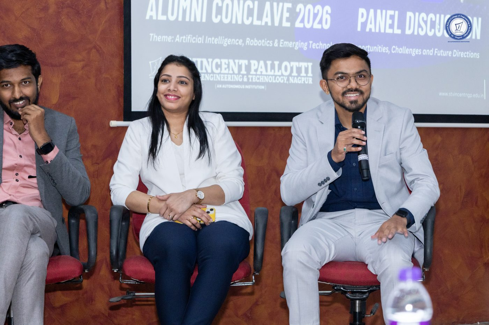
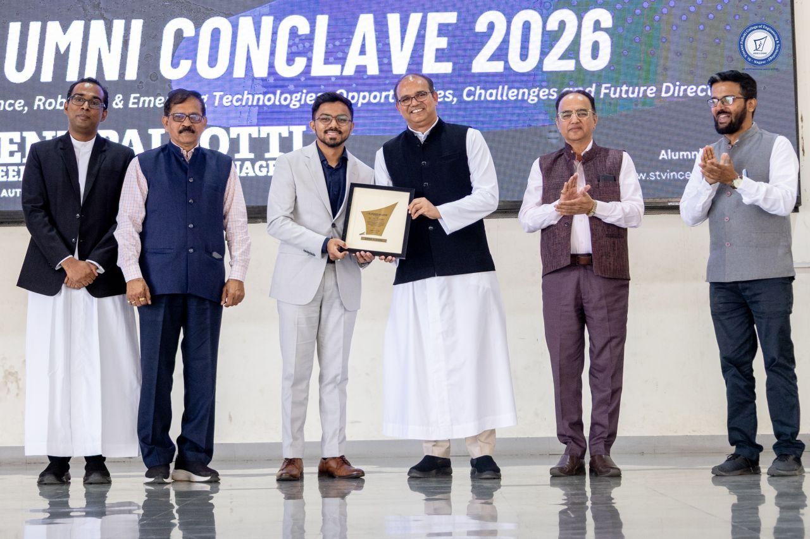
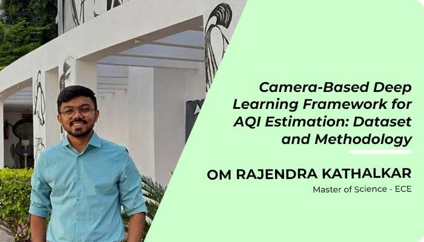
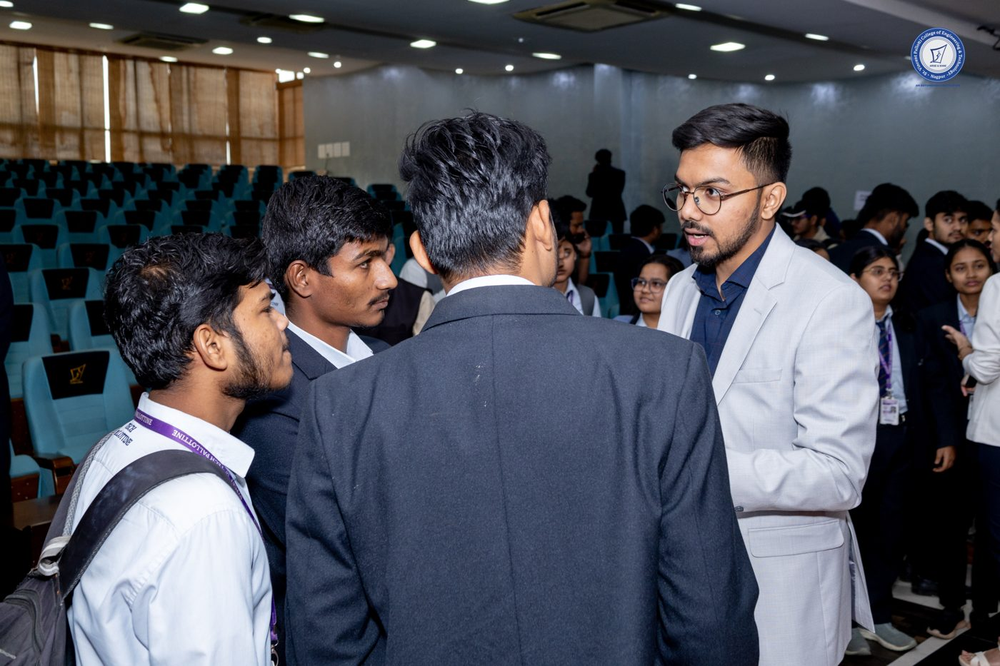
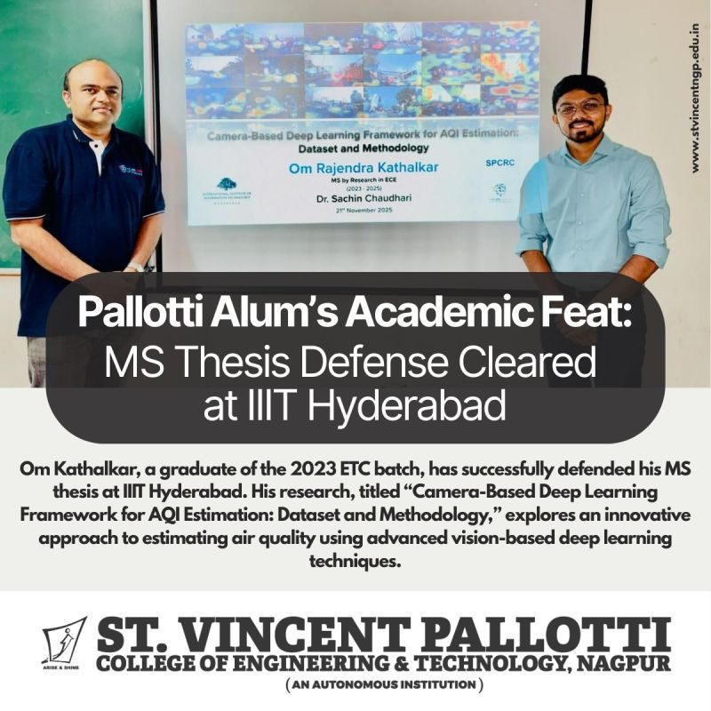
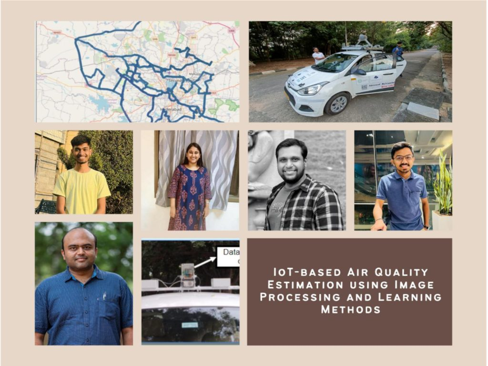
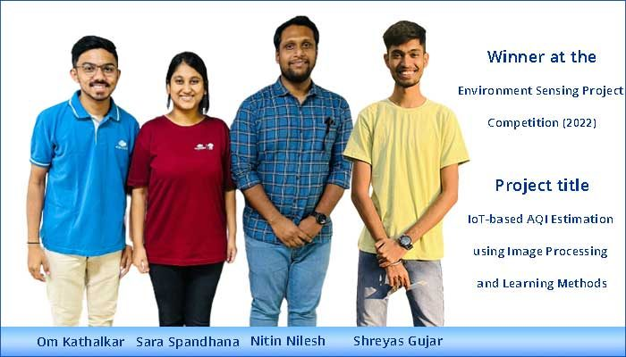
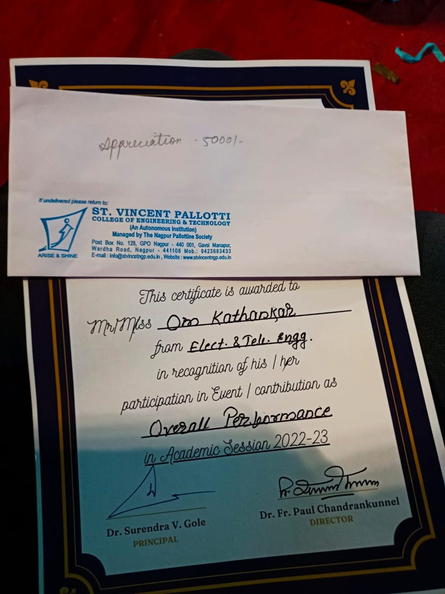
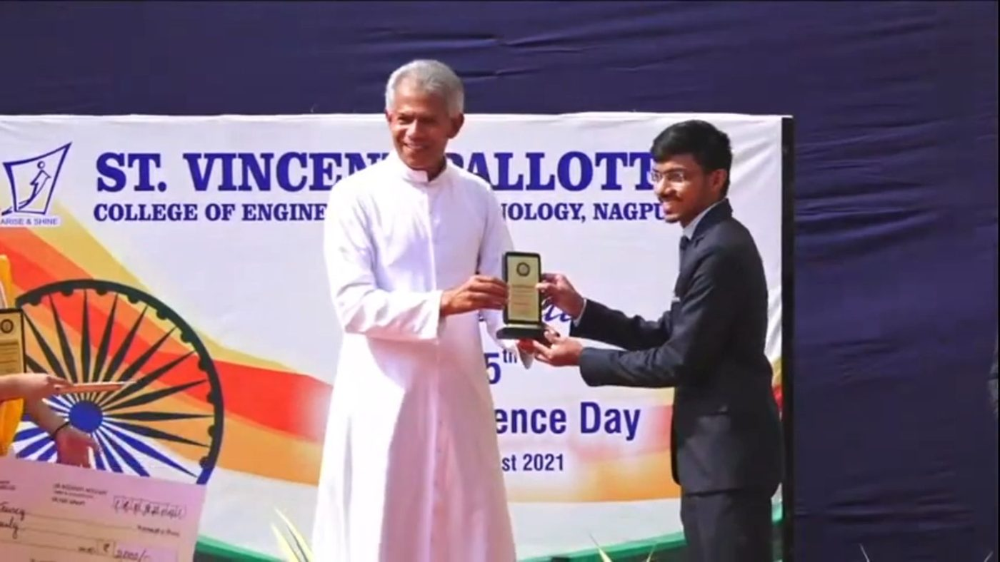

Gallery & press
Featured
Awards, talks and milestones — and where the work has been covered.









In the media
6 storiesIIITH's unique research pathway transforms interns into innovatorsThe Hans India · Jan 2026IIITH's Alternate Admissions GATEway for Postgraduate ResearchersIIITH Blogs · Jan 2026Pallotti Pride: Academic Excellence HighlightSVPCET on LinkedIn · Nov 2025Om Rajendra Kathalkar — IIIT-H Monthly NewsIIIT Hyderabad Blog · Nov 2025Sensor-Free Method Wins Environmental Sensing CompetitionIIIT Hyderabad Blog · Feb 2023IoT-based AQI Estimation — Detailed Project StoryIIIT Hyderabad Research · 2022